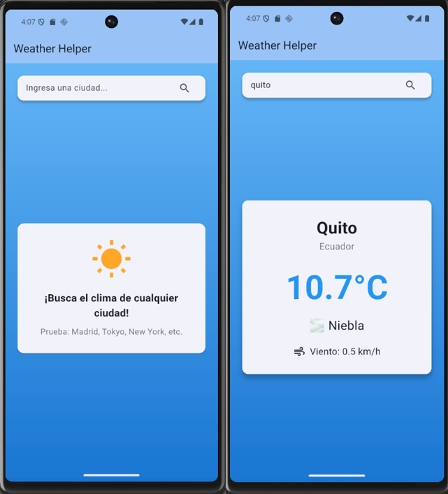
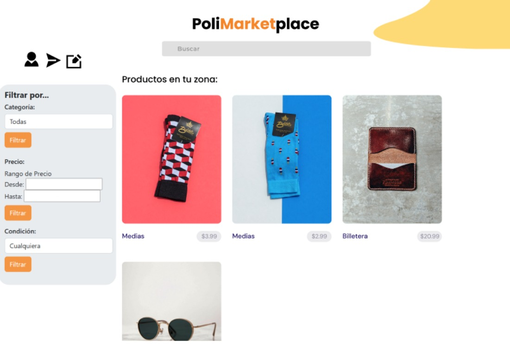
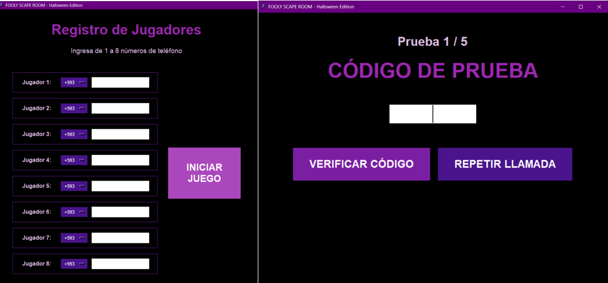

Portafolio Paúl Dávila
Bienvenido a mi portafolio. Usa las flechas para navegar.

Weather Helper
App móvil desarrollada con Flutter + Dart que permite buscar el clima en distintas ciudades usando la API pública de Open-Meteo (sin API key).
Ver repositorio en GitHub

PoliMarketPlace
Página web hecha con Django que funciona como un marketplace. Muestra artículos en tu zona, permite subir artículos para vender y tiene chat en tiempo real con WebSockets entre compradores y vendedores según el producto.
Ver repositorio en GitHub

Fooly Scape Room
Juego de fiesta inmersivo temático de Halloween desarrollado con Python que usa Twilio para llamar a los celulares de los jugadores y darles acertijos o retos que al completarse revelan un código para pasar a la siguiente ronda.
Ver repositorio en GitHub